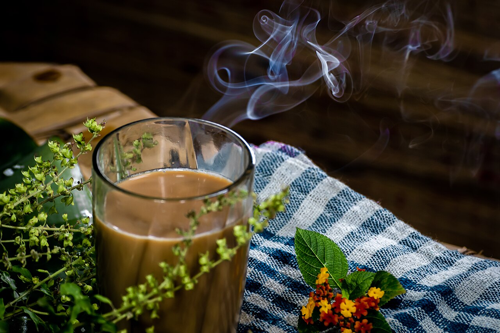

Credit: TAPAS KUMAR HALDER, CC BY-SA 4.0, via Wikimedia Commons

Description:
This chai tea mix makes a creamy, sweet, warmly spiced drink that tastes like a latte, so you can skip the coffee shop and still get a warming cup.
Ingredients:
- 2 ½ cups white sugar
- 1 ½ cups unsweetened instant tea
- 1 cup nonfat dry milk powder
- 1 cup powdered non-dairy creamer
- 1 cup French vanilla flavored powdered non-dairy creamer
- 2 teaspoons ground ginger
- 2 teaspoons ground cinnamon
- 1 teaspoon ground cloves
- 1 teaspoon ground cardamom
Steps:
- Gather the ingredients.
- Combine sugar, instant tea, milk powder, nondairy creamer, and vanilla-flavored creamer in a large bowl. Stir in ginger, cinnamon, cloves, and cardamom.
- Blend 1 cup at a time in a food processor or blender until a fine powder.
- Stir 2 heaping tablespoons chai tea mix into a mug of hot water for 1 serving.